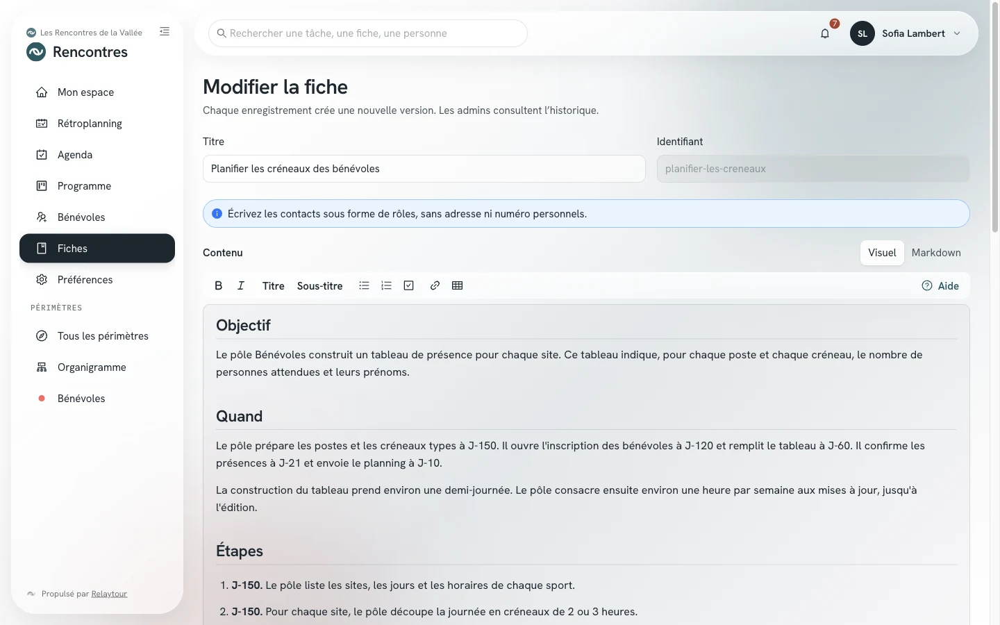

Les fiches méthode s'écrivent en Markdown. Quelques signes placés dans le texte donnent les titres, les listes, les liens et les tableaux. Ce guide présente tous les signes que les fiches affichent.
Ce mode d'emploi complète la section « Une fiche méthode » du mode d'emploi des référentes et référents. Rédiger une fiche demande un droit de rédaction, accordé par un admin.
Point de départ
L'éditeur de fiche
Le bouton Modifier d'une fiche ouvre l'éditeur en mode Visuel : vous écrivez directement dans la fiche telle qu'elle s'affiche. Le mode Markdown montre le texte source, avec les signes de ce guide. Votre navigateur garde le mode choisi.
L'éditeur garde un brouillon dans votre navigateur. Une page rechargée par erreur ne perd donc pas votre texte.
Sans rien retenir
La barre de mise en forme
La barre au-dessus du texte met en forme votre sélection, dans les deux modes. En mode Markdown, elle écrit les signes à votre place. Un deuxième appui sur le même bouton retire la mise en forme.
GrasItaliqueMettre la sélection en valeur. En mode Markdown, sans sélection, le bouton insère un exemple à remplacer.
TitreSous-titreTransformer la ligne du curseur en titre de section ou en sous-titre.
Liste à pucesListe numérotéeCases à cocherTransformer chaque ligne sélectionnée en élément de liste. Un autre bouton de liste change le type de la liste.
LienFaire de la sélection le texte d'un lien. En mode visuel, l'éditeur demande l'adresse. En mode Markdown, il sélectionne l'adresse, que vous remplacez par la vôtre.
TableauAjouter un tableau de deux colonnes sous la ligne du curseur.
AideOuvrir ce guide à côté de votre texte, sans quitter l'éditeur.
@Saisir une arobase : l'éditeur propose les périmètres et les groupes de l'activité. Tab choisit la première proposition.
Sur un ordinateur, trois raccourcis existent : ⌘B ou Ctrl+B pour le gras, ⌘I ou Ctrl+I pour l'italique, ⌘K ou Ctrl+K pour un lien. ⌘Z ou Ctrl+Z annule une mise en forme. En mode visuel, un clic sur une case à cocher la coche ou la décoche.

L'éditeur d'une fiche et sa barre de mise en forme, sur l'organisation d'exemple.
Plusieurs périmètres
La liste « Concerne aussi »
Une fiche appartient à un périmètre. Elle peut aussi en concerner d'autres : les référentes et référents de la Logistique lisent alors la fiche des Bénévoles sur les créneaux, sans la modifier.
Concerne aussiChoisir, sous le texte de la fiche, des périmètres et des groupes de l'activité. Un groupe concerne aussi les périmètres qui le rejoindront.
AjouterAccepter, à l'enregistrement, les périmètres que le texte mentionne. Une mention écartée ne revient pas pendant la rédaction.
Confirmer la listeConfirmer une large diffusion : au moins quatre périmètres, et plus de la moitié de ceux de l'activité. Si la fiche concerne toute l'activité, une fiche commune convient mieux.
La page de chaque périmètre de la liste présente la fiche dans son panneau « Fiches connexes », en lecture seule. Ses référentes et référents la masquent quand elle ne leur sert pas. Le mode d'emploi des référentes et référents décrit ce panneau.
Douze notions
La syntaxe des fiches
Chaque exemple montre le texte à écrire, puis l'affichage de la fiche. Les fiches n'affichent ni image, ni code HTML.
Paragraphes et retours à la ligne
Une ligne vide sépare deux paragraphes. Deux lignes qui se suivent sans ligne vide forment un seul paragraphe.
Une barre oblique inverse (\) en fin de ligne passe à la ligne suivante sans changer de paragraphe.
Vous écrivez
Le gymnase ouvre à 8 h.
Cette ligne continue la phrase précédente.
Une ligne vide commence un nouveau paragraphe.\
Cette ligne commence sous la précédente.
La fiche affiche
Le gymnase ouvre à 8 h.
Cette ligne continue la phrase précédente.
Une ligne vide commence un nouveau paragraphe.
Cette ligne commence sous la précédente.
Titres
Un titre commence par des dièses suivis d'une espace. Deux dièses font un titre de section, trois dièses un sous-titre.
Le titre de la fiche s'affiche déjà en haut de la page : commencez donc vos sections par deux dièses.
Vous écrivez
## Avant la journée
### Matériel à réserver
Le texte de la section suit le titre.
La fiche affiche
Avant la journée
Matériel à réserver
Le texte de la section suit le titre.
Gras, italique et texte barré
Deux astérisques de chaque côté mettent un passage en gras. Un tiret bas de chaque côté le met en italique. Deux tildes le barrent.
Vous écrivez
Le local ferme **à 19 h précises**.
Pensez à _signer la feuille de présence_.
Le rendez-vous a lieu ~~au stade~~ au gymnase.
La fiche affiche
Le local ferme à 19 h précises.
Pensez à signer la feuille de présence.
Le rendez-vous a lieu au stade au gymnase.
Listes
Une liste à puces commence chaque ligne par un tiret suivi d'une espace. Une liste numérotée commence chaque ligne par un nombre suivi d'un point.
Sous une puce, deux espaces au début d'une ligne placent l'élément dans une sous-liste.
Vous écrivez
- Clés du local
- Chasubles
- 20 rouges
- 20 bleues
1. Ouvrir le gymnase
2. Installer les filets
3. Accueillir les équipes
La fiche affiche
Clés du local
Chasubles
20 rouges
20 bleues
Ouvrir le gymnase
Installer les filets
Accueillir les équipes
Cases à cocher
Une case commence par un tiret, puis des crochets qui entourent une espace. Un x entre les crochets coche la case.
La case se coche en modifiant la fiche, et non d'un clic. Une case de fiche ne crée pas de tâche.
Vous écrivez
- [x] Réserver le gymnase
- [ ] Commander les médailles
- [ ] Prévenir la mairie
La fiche affiche
Réserver le gymnase
Commander les médailles
Prévenir la mairie
Liens
Un lien place son texte entre crochets, puis son adresse entre parenthèses. Une adresse écrite seule devient aussi un lien.
Un lien de fiche s'ouvre dans un nouvel onglet.
Vous écrivez
Consultez le [règlement du tournoi](https://exemple.org/reglement).
Plan d’accès : https://exemple.org/plan
Un chevron fermant suivi d'une espace place la ligne dans un encadré. Un encadré met en avant une consigne à retenir.
Vous écrivez
> Les clés se rendent à l’accueil avant 19 h.
La fiche affiche
Les clés se rendent à l’accueil avant 19 h.
Ligne de séparation
Trois tirets seuls sur une ligne tracent une ligne de séparation. Une ligne vide doit les précéder : sans elle, le texte du dessus devient un titre.
Vous écrivez
Fin de la partie matinale.
---
Début de l’après-midi.
La fiche affiche
Fin de la partie matinale.
Début de l’après-midi.
Texte tel quel
Des accents graves entourent un texte qui s'affiche tel quel, en police à chasse fixe : un nom de fichier, une référence.
Trois accents graves sur une ligne ouvrent un bloc de plusieurs lignes, et trois autres le ferment.
Vous écrivez
Le fichier s’appelle `planning-2027.xlsx`.
```
Terrain 1 : 9 h - 12 h
Terrain 2 : 14 h - 18 h
```
La fiche affiche
Le fichier s’appelle planning-2027.xlsx.
Terrain 1 : 9 h - 12 h
Terrain 2 : 14 h - 18 h
Mentions
Une arobase suivie de l'identifiant d'un périmètre le mentionne, par exemple @logistique. Une mention @groupe: suivie de la clé d'un groupe mentionne tout le groupe.
Une mention s'affiche comme une étiquette. Celle d'un groupe liste ses périmètres au survol ou à l'appui. Dans l'éditeur, une arobase propose les périmètres et les groupes de l'activité.
Une mention ne partage pas la fiche. À l'enregistrement, l'éditeur propose d'ajouter les périmètres mentionnés à la liste « Concerne aussi ».
Vous écrivez
La @logistique prépare les lieux, et chaque @groupe:sport transmet ses horaires.
La fiche affiche
La Logistique prépare les lieux, et chaque Sports transmet ses horaires.
Caractères réservés
Une barre oblique inverse devant un caractère de mise en forme l'affiche tel quel : astérisque, tiret bas, dièse, crochet.
Une balise HTML s'affiche comme du texte. Les fiches n'acceptent que la syntaxe Markdown de ce guide.
Vous écrivez
Le tarif réduit\* s’applique aux moins de 18 ans.
\* Sur présentation d’une pièce d’identité.
<b>Cette balise reste du texte.</b>